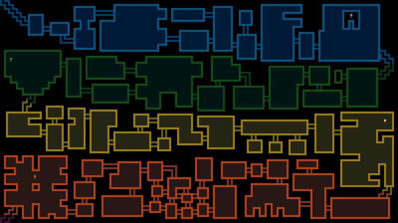
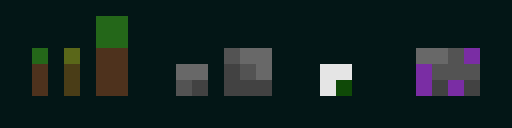

Home
A Dungeon Crawler game developed during the COVID-19 Quarantine.
Beneath the School lies a terrible beast...
Long ago, in times of magic, there existed the land known as Pelg.
Creatures of yore roamed the earth. The mightiest and most terrible of
these was the Vantursil. It was a massive serpent with three eyes, four
monstrous arms, and venom that could kill a dragon.
For years, the Vantursil terrorized the people of Pelg, until a day came
when they fought back. The greatest of wizards, hailing from the School
of Orlomin, fought the terrible beast. Wielding the most powerful staves
known to man, they sealed it beneath the school, never to see the light
of day again.
70 years later, the chasm in which the Vantursil sleeps is about to be
opened. A young boy studying at the School of Orlomin as an apprentice
mage is in desperate need of a cure for his ailing brother. All other
medicine has failed, but legend tells of the unmatched healing properties
of Vantursil venom. The boy has sworn to descend into the earth, retrieve
the four staves of power, and use them to slay the great beast that lies
dormant in the cavern below.
The Labyrinth of Orlomin
The vast maze of rooms beneath the School are broken into four levels:
- The Sunken Hall
- The Earthen Hollows
- The Surging Core
- The Blazing Depths
Each level houses one of the four staves of power used to seal the Vantursil underground. Each staff has warped and affected their level in unique ways, thanks to their immense influence and power on the matter around them.
- The Staff of Oceans was placed in the Sunken Halls, which caused water to seep in and and erode away what was once the School's Great Hall.
- The Staff of Mountains was placed in the Earthen Hollows. The rock and soil became incredibly solid and unmovable, preventing any water from the Sunken Halls from dripping in from above. Amazingly, plantlife has grown on this level, despite being in the darkness of the underground.
- The Staff of Storms was placed in the Surgining Core. Everything on this level has become charged with electricity. Creatures can summon lightning at will, and touching the wrong brick on the wall might electrocute an unsuspecting adventurer.
- The Staff of Suns was placed in the Blazing Depths. Fires roar all across this level and everything is singed. Standing in one place for too long could result in burns.
Creatures Underground
The four staves of power have attracted creatures of all shapes and sizes, granting them trace amounts of their power. These creatures, in turn, have become the staves' guardians. Anyone seeking them will face some serious resistance.
Level 1: The Sunken Hall
Several water-based creatures lurk in the Sunken Hall:
- Swordfish and Spearfish. They glide through the water and lunge at you with their pointy end. Beware their stab!
- Frogwarrior. Marked by red war paint, he kicks and punches his way through all of his problems. Beware his might!
- Frogmage. Marked by the purple rune of sorcery, she weaves spells and hurls missiles at you from afar. Beware her deadly aim!
- Ghosts. Able to phase in and out of reality, ghosts are sneaky, quiet, and deadly. Beware their spookiness!
- Wet Ghost. A ghost that's spent too much time in the Sunken Hall. It has developed the ability spray water. Beware its moistness!
- The Slomch. Nobody knows where Slomchs came from. They appear to be made from goo, glue, and poo. Beware its stickiness!
Level 2: The Earthen Hollows
The Staff of Mountains has woken the very plants and earth in the Earthen Hollows! Living, breathing rock and plants roam the caves!
- Sapling. Saplings move in jittery, sudden movements, like a half-alive tree that's learning how to walk. Beware its spontaneous behavior!
- Sick Sapling. Some saplings, being frail and weak, have become corrupted by the darkness. They're quicker, move without purpose, and poison those that touch it. Beware its sickness!
- Trunker. A thick tree that charges like a bull. Beware its wallop!
- Rock. An averaged-sized rock that's been brought to life. Flinging stones is his specialty. Beware his strength!
- Boulder. Rock's older brother. He packs a punch strong enough to crumble brick. Beware his force!
- Mossy Ghost. A ghost that's spent too much time in the Earthen Hollows. It can fire a moss that roots a victim in place. Beware its mossyness!
- Superstone. A stone that's been enchanted. When threatened, it emits an aura able to damage and confuse its enemy. Beware its power!
Level 3: The Surging Core

Level 4: The Blazing Depths